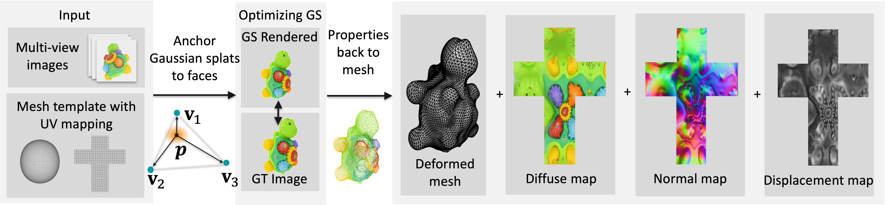

Shuyi Zhou1, Shengze Zhong2, Kenshi Takayama2, Takafumi Taketomi2, Takeshi Oishi1
1The University of Tokyo 2CyberAgent
Siggraph Asia 2025
We propose DeMapGS, a structured Gaussian Splatting framework that jointly optimizes deformable surfaces and surface-attached 2D Gaussian splats. By anchoring splats to a deformable template mesh, our method overcomes topological inconsistencies and enhances editing flexibility, addressing limitations of prior Gaussian Splatting methods that treat points independently. The unified representation in our method supports extraction of high-fidelity diffuse, normal, and displacement maps, enabling the reconstructed mesh to inherit the photorealistic rendering quality of Gaussian Splatting. To support robust optimization, we introduce a gradient diffusion strategy that propagates supervision across the surface, along with an alternating 2D/3D rendering scheme to handle concave regions. Experiments demonstrate that DeMapGS achieves state-of-the-art mesh reconstruction quality and enables downstream applications for Gaussian splats such as editing and cross-object manipulation through a shared parametric surface.
@inproceedings{zhou2025demapgs,
title={DeMapGS: Simultaneous Mesh Deformation and Surface Attribute Mapping via Gaussian Splatting},
author={Zhou, Shuyi and Zhong, Shengze and Takayama, Kenshi and Taketomi, Takafumi and Oishi, Takeshi},
booktitle={ACM SIGGRAPH 2025 conference papers},
pages={1--11},
year={2025}
}